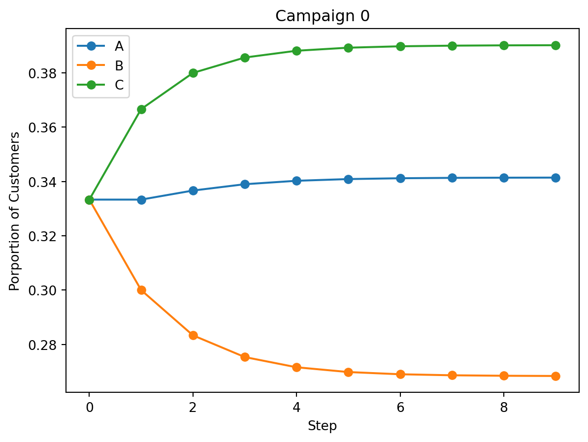
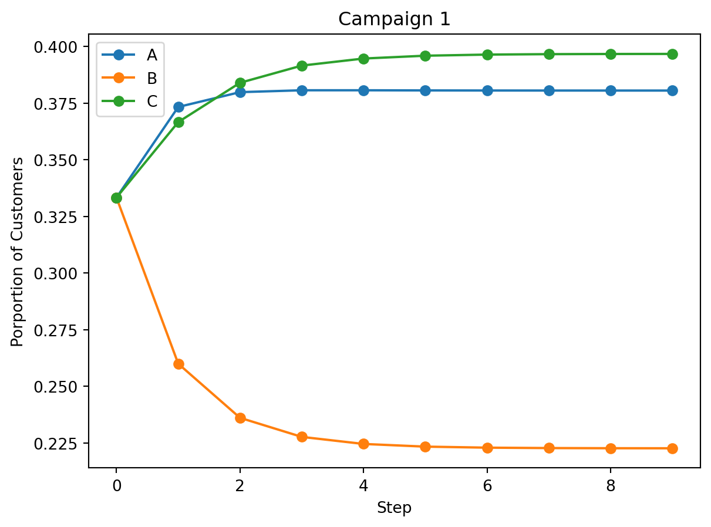
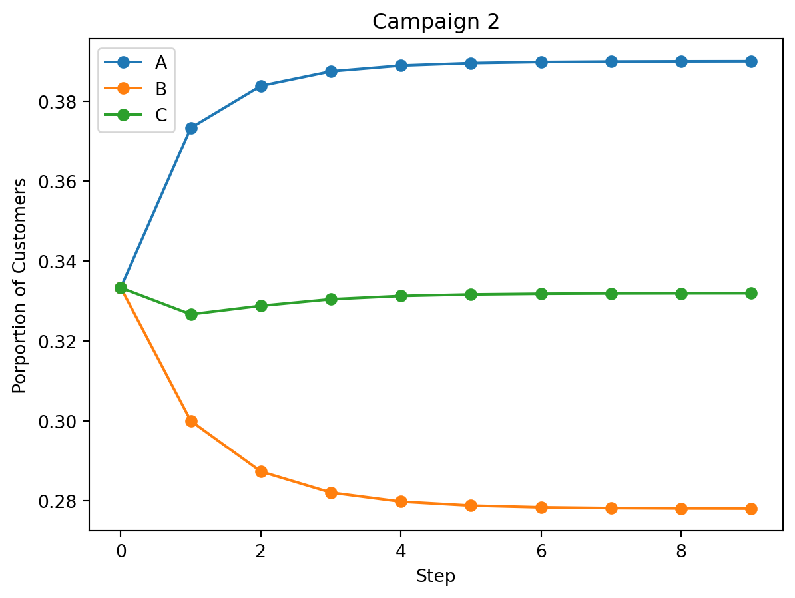
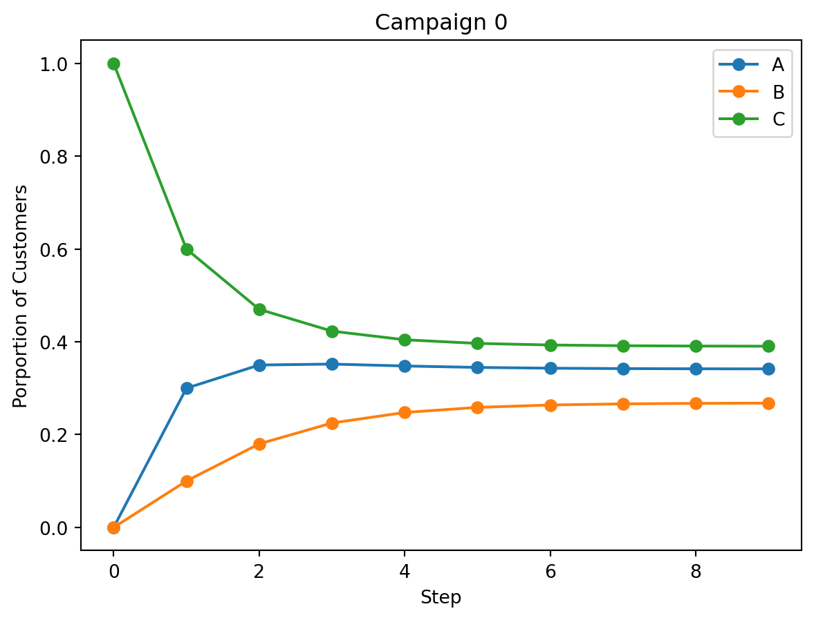
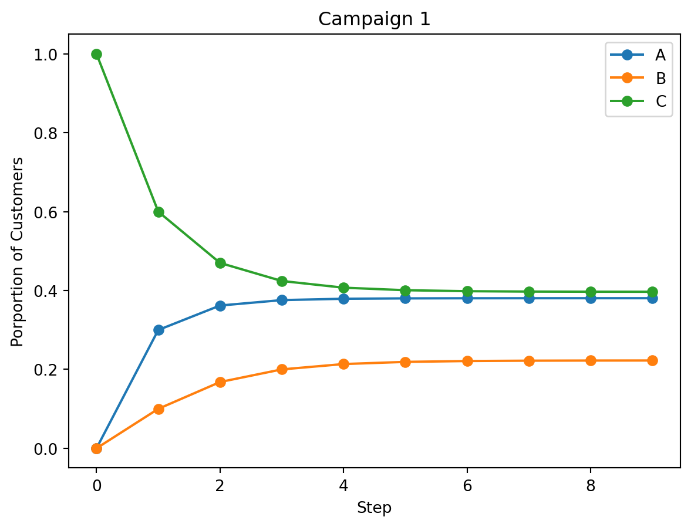
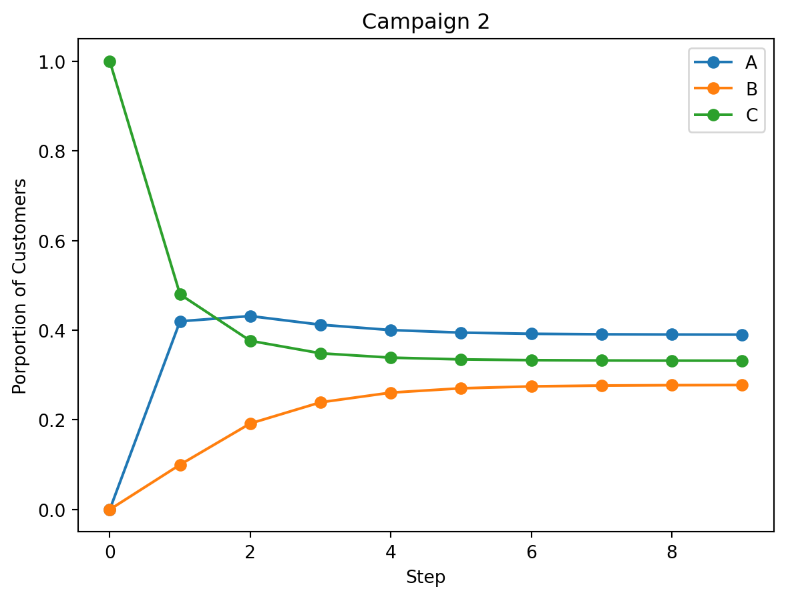
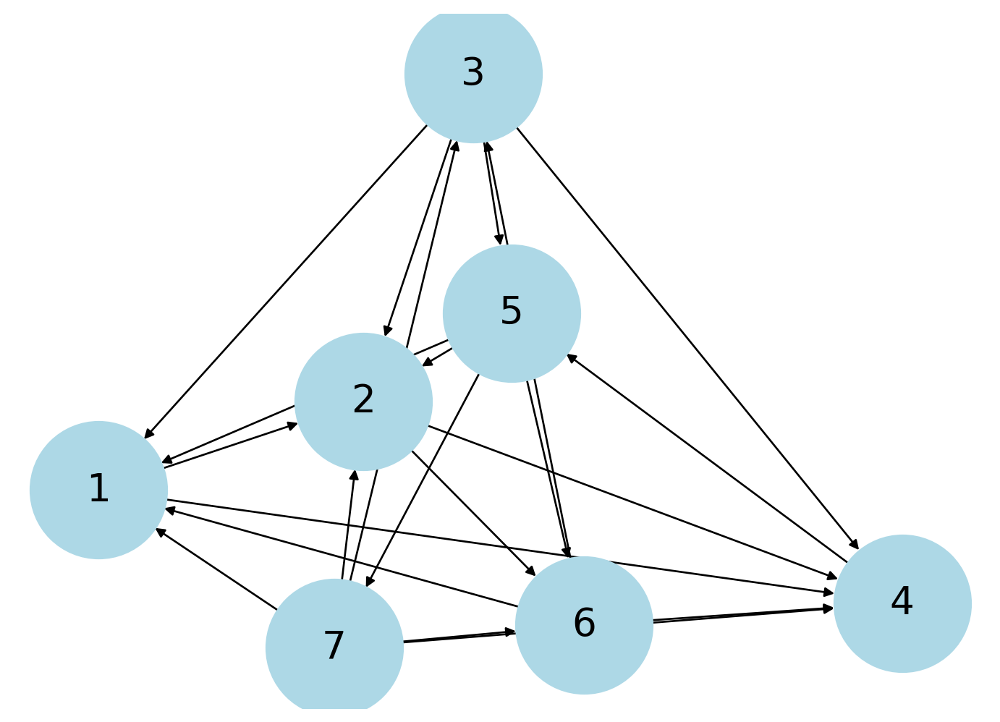
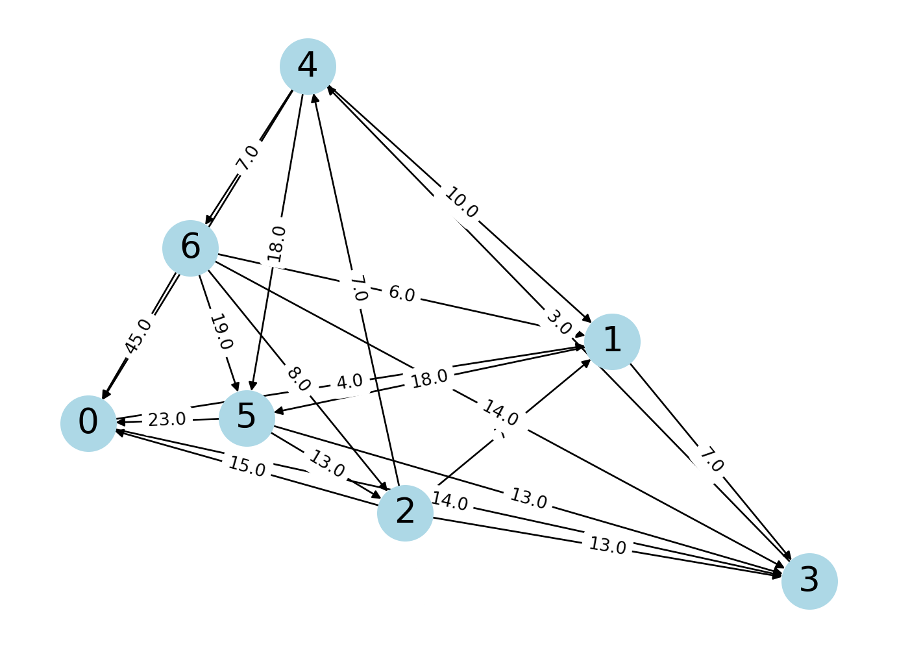

\(\displaystyle \left[\begin{matrix}0.5 & 0.2 & 0.3\\0.2 & 0.6 & 0.1\\0.3 & 0.2 & 0.6\end{matrix}\right]\)
\(\displaystyle \left[\begin{matrix}0.339\\0.275333333333333\\0.385666666666667\end{matrix}\right]\)
Here is the system of equations that represents the scenario.

Here is the transition matrix. The market shares after 3 years are shown below given that the initial market shares are equal, which meant that the initial vector is [1/3, 1/3, 1/3].
\(\displaystyle \left[\begin{matrix}0.5 & 0.2 & 0.3\\0.2 & 0.6 & 0.1\\0.3 & 0.2 & 0.6\end{matrix}\right]\)
\(\displaystyle \left[\begin{matrix}0.339\\0.275333333333333\\0.385666666666667\end{matrix}\right]\)
As seen in the below graphs, the effect of launching campaign 2 is better than campaign 1. Note that campaign 0 shows what would happen if no campiagn is launched. In that scenario, company C would have the highest market share whereas we would be stuck in the middle. Launching campaign 1 would not change this situation but we would be closer to C. However, launching campaign 2 would allow us to surpass C and have the highest market share, bringing us to 0.4. asdff



You might have noticed that we’re assuming that the market shares are equal at the beginning. However, the transition matrix is a stable discrete dynamical system which would have the same equilibrium state regardless of the initial vector. To identify a stable system, we need the dominant eigenvalue to be equal to 1 which is the case here. An example is seen below where the initial market shares are [0, 0, 1].
{1.00000000000000: 1, 0.461803398874989: 1, 0.238196601125011: 1}


Further analysis shows that there is a diminishing marginal return if more money is spent on a campaign to take more customers away from B or C. The is shown as the curves are concave down. Additionally, these graphs also show that spending money on taking C’s customers is more valuable than taking B’s because A increases around 0.15 for the former and 0.1 for the latter. Taking C’s customers also makes A the market leader by a significant margin. It should be noted that this also assumes the amount of money it takes to take B’s customers is the same as taking C’s customers.
Additionally, although the initial market share doesn’t matter, it is important to note that we’re assuming these events are independent of each other. For example, perhaps customers are more likely to follow the pack if a majority of the population are using companies which means that the market would be more volatile than my simulations suggest. This would also mean that it’s more important for us to have the highest market share at the beginning, making initial market shares more important.
The time dependent reaction diffusion equation is shown below and I translated it to matrix form.


Note that because there is no continous source of gas, the kf is 0.
After this, we can factor the y vector at time t out (by multiplying the lone y vector by the identity matrix). This gives us a way to walk forward to the densities at time t+1 from the densities at time t. To go backwards, we can take the inverse on both sides.
This allows us to estimate the value of D, the diffusion constant by walking backwards from the given densities at t = 270 to try to match the given densities at t = 240. I got a value of D = 0.00004.
From there, we can continue going backwards to t = 0, giving us an initial concentration of 0, 0.0149, 1.01, 6.36, 1.01, 0.0149,0 at each node.
Then, we can go forwards to t = 210 and t = 310 by using the previous equation get the concentrations at those times.
't = 240'\(\displaystyle \left[\begin{matrix}0\\0.01\\1.16\\3.69\\1.16\\0.01\\0\end{matrix}\right]\)
't = 0'\(\displaystyle \left[\begin{matrix}0\\0.0149\\1.01\\6.36\\1.01\\0.0149\\0\end{matrix}\right]\)
't = 210'\(\displaystyle \left[\begin{matrix}0.0448\\0.351\\1.74\\4.15\\1.74\\0.351\\0.0448\end{matrix}\right]\)
't = 310'\(\displaystyle \left[\begin{matrix}0.0872\\0.496\\1.83\\3.56\\1.83\\0.496\\0.0872\end{matrix}\right]\)
I’ve also included an animation of the gas concentrations from the initial state to t = 310. One can see how the points I calculated comes close the points given. A solution that allows negative values would come closer to the given values but here, I’ve coverted decimals to fractions with a tolerance of 0.01.

When first ranking the teams based on win loss ratio, we see that team 7 is the best team with a ratio of 5 and Team 4 is the worst team with a ratio of 0.2. This is done by summing the ith row to get the number of wins and the ith column to get the number of losses and then dividing to get the win loss ratio of the ith team.
array([[0., 1., 0., 1., 0., 0., 0.],
[0., 0., 0., 1., 0., 1., 0.],
[1., 1., 0., 1., 1., 0., 0.],
[0., 0., 0., 0., 1., 0., 0.],
[1., 1., 0., 0., 0., 1., 1.],
[1., 0., 1., 1., 0., 0., 0.],
[1., 1., 1., 1., 0., 1., 0.]])| Wins | Losses | Ratio | |
|---|---|---|---|
| Team | |||
| 7 | 5.0 | 1.0 | 5.0 |
| 3 | 4.0 | 2.0 | 2.0 |
| 5 | 4.0 | 2.0 | 2.0 |
| 6 | 3.0 | 3.0 | 1.0 |
| 1 | 2.0 | 4.0 | 0.5 |
| 2 | 2.0 | 4.0 | 0.5 |
| 4 | 1.0 | 5.0 | 0.2 |
To rank the teams based on vertex power, I took the square of the adjacency matrix and added the adjacency matrix to get the vertex power matrix. The square of the matrix takes into account the wins of the team that the team beat, which thus takes into account the strength the opponent. The rankings are similar but this ranking broke ties that were seen in the win loss ranking.
# directed graph
G = nx.DiGraph()
rows, columns = M.shape
for i in range(rows):
for j in range(columns):
if M[i][j] == 1:
G.add_edge(i+1,j+1)
nx.draw(G, with_labels=True, node_size = 5000, node_color = 'lightblue', font_size = 20, font_color = 'black')
Msquared = np.dot(M,M)
vertex_power_matrix = Msquared + M
vertex_power = np.sum(vertex_power_matrix, axis=1)
df = pd.DataFrame({'Team': team, 'Vertex Power': vertex_power}).sort_values(by='Vertex Power', ascending=False).set_index('Team')
df| Vertex Power | |
|---|---|
| Team | |
| 7 | 17.0 |
| 5 | 16.0 |
| 3 | 13.0 |
| 6 | 10.0 |
| 2 | 6.0 |
| 1 | 5.0 |
| 4 | 5.0 |

Note that I used alpha = 0.85 and the teleportation vector is [1/7, 1/7, 1/7, 1/7, 1/7, 1/7, 1/7].
This ranking is done by taking the transpose of the matrix and applying the equation (I - aP)x = (1-a)v where P is the transition matrix, v is the teleportation vector, and a is the damping factor. The general intuition behind this method is that it tells us the amount of different teams that one specific team would lead to. Applied to this case, we’re ranking by the strength of each team.
The most notable change is that 5 first rather than 7 and this difference could be due to the teleportation vector. The intuition behind the teleportation vector in this scenario is that we’re making it equally likely that a team beats another team, thus reducing the impact of the other wins. Additionally, we can note that 5 did beat 7 which beat a lot of other teams and while this is taken into account in the vertex power ranking, it perhaps is emphasized more here.
# reverse graph
M = np.zeros((7,7))
M[0,1] = 1
M[6,2] = 1
M[1,3] = 1
M[3,4] = 1
M[2,1] = 1
M[4,0] = 1
M[5,0] = 1
M[2,0] = 1
M[6,1] = 1
M[1,5] = 1
M[2,3] = 1
M[6,3] = 1
M[4,6] = 1
M[5,3] = 1
M[2,4] = 1
M[4,5] = 1
M[6,0] = 1
M[4,1] = 1
M[6,5] = 1
M[0,3] = 1
M[5,2] = 1
T = M.transpose()
D = np.identity(7)
for i in range(7):
D[i,i] = 1/(np.sum(T[i],axis = 0))
# transition matrix
P = np.dot(T.transpose(),D)
# teleportation vector
v = np.array([1/7, 1/7, 1/7, 1/7, 1/7, 1/7, 1/7])
a = 0.85
lhs = (np.identity(7) - a * P)
rhs = (1-a) * v
x = np.linalg.solve(lhs, rhs)
df = pd.DataFrame({'Team': team, 'Reverse Page Rank': x}).sort_values(by='Reverse Page Rank', ascending=False).set_index('Team')
df| Reverse Page Rank | |
|---|---|
| Team | |
| 5 | 0.244525 |
| 7 | 0.184189 |
| 3 | 0.176270 |
| 6 | 0.130332 |
| 4 | 0.125352 |
| 2 | 0.079666 |
| 1 | 0.059667 |
With the added weights to the adjacency matrix, the ranking becomes more accurate. Weights help take into consideration how convincingly the team won while punishing those that were a closer game. Rankings show again, and more convincingly, that 7 is at the top with 5 not too close behind but the rest of the teams are more spread out. This helps show that more nuance in the skill disparity between the teams.
Note I couldn’t figure out how to rename the nodes to 1-7 instead of 0-6.
# weighted adjacency matrix
M = np.zeros((7,7))
M[0,1] = 4
M[6,2] = 8
M[1,3] = 7
M[3,4] = 3
M[2,1] = 7
M[4,0] = 7
M[5,0] = 23
M[2,0] = 15
M[6,1] = 6
M[1,5] = 18
M[2,3] = 13
M[6,3] = 14
M[4,6] = 7
M[5,3] = 13
M[2,4] = 7
M[4,5] = 18
M[6,0] = 45
M[4,1] = 10
M[6,5] = 19
M[0,3] = 14
M[5,2] = 13
display(M)
G = nx.from_numpy_array(np.matrix(M), create_using=nx.DiGraph)
layout = nx.spring_layout(G)
nx.draw(G, layout, with_labels=True, node_size = 1000, node_color = 'lightblue', font_size = 20, font_color = 'black')
labels = nx.get_edge_attributes(G, "weight")
nx.draw_networkx_edge_labels(G, pos=layout, edge_labels=labels)
plt.show()
Msquared = np.dot(M,M)
vertex_power_matrix = Msquared + M
vertex_power = np.sum(vertex_power_matrix, axis=1)
df = pd.DataFrame({'Team': team, 'Vertex Power': vertex_power}).sort_values(by='Vertex Power', ascending=False).set_index('Team')
dfarray([[ 0., 4., 0., 14., 0., 0., 0.],
[ 0., 0., 0., 7., 0., 18., 0.],
[15., 7., 0., 13., 7., 0., 0.],
[ 0., 0., 0., 0., 3., 0., 0.],
[ 7., 10., 0., 0., 0., 18., 7.],
[23., 0., 13., 13., 0., 0., 0.],
[45., 6., 8., 14., 0., 19., 0.]])
| Vertex Power | |
|---|---|
| Team | |
| 7 | 2361.0 |
| 5 | 1944.0 |
| 6 | 1048.0 |
| 2 | 928.0 |
| 3 | 820.0 |
| 1 | 160.0 |
| 4 | 129.0 |